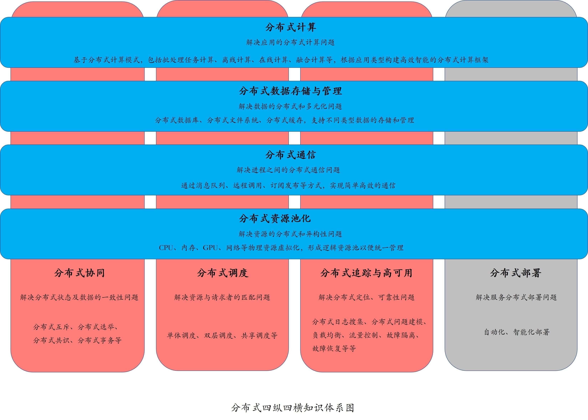

- 00 开篇词 四纵四横，带你透彻理解分布式技术.md
- 01 分布式缘何而起：从单兵，到游击队，到集团军.md
- 02 分布式系统的指标：啥是分布式的三围.md
- 03 分布式互斥：有你没我，有我没你.md
- 04 分布式选举：国不可一日无君.md
- 05 分布式共识：存异求同.md
- 06 分布式事务：All or nothing.md
- 07 分布式锁：关键重地，非请勿入.md
- 08 分布式技术是如何引爆人工智能的？.md
- 09 分布式体系结构之集中式结构：一人在上，万人在下.md
- 10 分布式体系结构之非集中式结构：众生平等.md
- 11 分布式调度架构之单体调度：物质文明、精神文明一手抓.md
- 12 分布式调度架构之两层调度：物质文明、精神文明两手抓.md
- 13 分布式调度架构之共享状态调度：物质文明、精神文明多手协商抓.md
- 14 答疑篇：分布式事务与分布式锁相关问题.md
- 15 分布式计算模式之MR：一门同流合污的艺术.md
- 16 分布式计算模式之Stream：一门背锅的艺术.md
- 17 分布式计算模式之Actor：一门甩锅的艺术.md
- 18 分布式计算模式之流水线：你方唱罢我登场.md
- 19 分布式通信之远程调用：我是你的千里眼.md
- 20 分布式通信之发布订阅：送货上门.md
- 21 分布式通信之消息队列：货物自取.md
- 22 答疑篇：分布式体系架构与分布式计算相关问题.md
- 23 CAP理论：这顶帽子我不想要.md
- 24 分布式数据存储系统之三要素：顾客、导购与货架.md
- 25 数据分布方式之哈希与一致性哈希：“掐指一算”与“掐指两算”的事.md
- 26 分布式数据复制技术：分身有术.md
- 27 分布式数据之缓存技术：“身手钥钱”随身带.md
- 28 分布式高可靠之负载均衡：不患寡，而患不均.md
- 29 分布式高可靠之流量控制：大禹治水，在疏不在堵.md
- 30 分布式高可用之故障隔离：当断不断，反受其乱.md
- 31 分布式高可用之故障恢复：知错能改，善莫大焉.md
- 32 答疑篇：如何判断并解决网络分区问题？.md
- 33 知识串联：以购买火车票的流程串联分布式核心技术.md
- 34 搭建一个分布式实验环境：纸上得来终觉浅，绝知此事要躬行.md
- 特别放送 Jackey：寄语天涯客，轻寒底用愁.md
- 特别放送 分布式下的一致性杂谈.md
- 特别放送 崔新：追根溯源，拨开云雾见青天.md
- 特别放送 徐志强：学习这件事儿，不到长城非好汉.md
- 特别放送 那些你不能错过的分布式系统论文.md
- 结束语 为什么说提升职业竞争力要从尊重、诚实开始？.md
00 开篇词 四纵四横，带你透彻理解分布式技术
你好，我是聂鹏程，智载云帆的CTO。在接下来的三个月时间里，我将带你打卡分布式技术。
在众多计算机技术当中，分布式技术无疑是最璀璨的明珠之一。毫不夸张地说，没有分布式技术就没有互联网，也就没有现在的阿里巴巴、腾讯、亚马逊、Facebook、谷歌等科技巨头，更不会有以信息技术为核心的、对人类历史产生巨大变革的第三次工业革命。万维网、Email、DNS等，都是分布式系统的典型代表。
随着分布式技术的不断发展，它也早已不再局限于传统的互联网等应用场景。在今年的两会期间，全国政协委员、360董事长周鸿祎更是大唱I’M ABCDE字母歌。IMABCDE这7个字母所代表的IoT物联网、Mobile移动计算、AI人工智能、Blockchain区块链、Cloud云计算、Data大数据、Edge边缘计算，也无不都是以分布式技术为基石。
无疑，谁更好地掌握了分布式技术，谁就更容易在新一轮技术浪潮中获得主动。在全球经济增速趋缓的大背景下，与许多应用业务大量裁人形成鲜明对比的是，各大巨头的中间件团队、实验室等基础部门，依然在大规模地招兵买马。随着业务扩展，以及IMABCDE等新兴技术领域的布局，分布式技术人才已然成为巨头们争夺的焦点。
一方面是各大厂商的求贤若渴，一方面是分布式专业技术人才的一将难求。在多年的面试中，我经常能体会到，有些面试者确实非常积极主动，但他们表现出来的水平却无法通过面试。分布式技术人才市场的供应与需求，俨然一首冰与火之歌。
2007年，我在西安电子科技大学攻读博士期间，就开始研究并行与分布式计算；毕业后，在IBM做过HPC大规模负载管理系统LSF相关的设计和研发工作，在华为负责过分布式IoT相关项目的架构设计，以及电信级业务微服务框架、函数服务框架的设计工作，也从事过区块链相关的研究工作。现在，我在智载云帆负责技术体系的构建，专注于无服务器Serverless的架构实践。
从我深入研究分布式技术这十多年的经验来看，分布式技术概念繁多、知识庞杂、新兴技术层出不穷，令许多新手望而却步，而许多有一定年限工作经验的老手，虽然也能对一些概念滔滔不绝，但追问到实质性问题就变得磕磕巴巴，顾左右而言它。比如：
- 各种分布式概念、名词学了一大堆，但经常张冠李戴，傻傻分不清楚；
- 做了多年技术，也参与了很多分布式技术实践，却无法回答工作中各种分布式技术、组件、框架选型背后的根源；
- 在一个分布式技术配套的典型场景往往能驾轻就熟，但一旦稍微变更考察业务场景、业务目标后，就变得毫无头绪。
究其原因，主要是知识碎片化、不成体系、见树不见林。如果再追究更深层次的原因，那无外乎就是两点：
- 在计算机学科课程设置中，分布式技术尴尬如同中小学中的性教育，重要但不受重视。鲜有高校在计算机本科专业中设置分布式课程，即便是有些高校在研究生教育中设置了相关课程，也是如同高手过招点到为止。
- 信息碎片化与信息孤立。在信息泛滥的信息时代，各种经典教材、最新文章自然是唾手可得。但，教材固然经典但严谨有余浅出不够，最重要的是没有与时下最新的场景相结合，一方面是因为教材“年久失修”，另一方面确实是因为分布式领域新技术推出的速度令人叹为观止；而网上的各种技术文章虽然多，却鲜有体系化的说明，一个个概念如同一座座信息孤岛。如果不能体系化地理解这些概念，何谈掌握，更谈不上真正地去综合运用这些知识了。
因为工作太忙，这些年我整体而系统的输出比较少。偶然一次听到任正非的讲话，他提到了基础教育、孩子是一个社会的未来，这让我感触良多。我想，如果说一个社会的未来，离不开朝气蓬勃的孩子们，那么一个行业的兴盛，同样也离不开一个广泛的从业者基础。而我如果能做好分布式通识课这样的一个专栏，既可以对自己这些年的经验做一次系统梳理，温故而知新，又能帮助更多的人系统理解并掌握分布式核心技术，为整个行业的兴盛略尽绵薄之力，何乐而不为呢？
其实，在工作、面试、演讲等多种场合，也经常会有人问我：“聂博士，分布式领域的新概念繁多、各种框架五花八门、各种组件层出不穷，应该如何应对啊？”我回答说：“其实你已经有答案了。”
看着他们满脸疑惑，我笑着问：“RISC芯片，程序设计中的封装、继承，还有现在提倡的中台战略，它们都在做一件什么事情呢？”他们答道：“莫非是重用？”
我说：“是的，既然指令可以重用，代码可以重用，技术、业务、数据等都可以重用，为什么知识体系不可以呢？学好分布式通识课，掌握了分布式的核心技术、体系，你就会发现很多新技术、新框架、新组件只不过是‘新瓶装旧酒’，将分布式核心技术进行了再包装、再组合，至多也就是做了一点延伸而已。”
那么，分布式通识课究竟该如何学呢？在接下来的三个月时间里，我会遵循以下4个思路带着你一起学习。
第一，分布式技术错综复杂，各种技术相互耦合，确实无法简单地像网络等技术一样划分层次，所以我会结合自己多年的积累和思考，首先为你梳理出一个脉络清晰、四纵四横的分布式核心技术知识体系，然后从这个纵横的技术体系中抽取最核心、最普适的技术思想以及概念，结合各种适用场景一一解析。这样的设计，旨在帮助你找到核心知识点，并将这些知识点联系起来，快速形成分布式核心技术的知识网络，从而形成自己的技术判断力，进而规划出自己的技术路线。
第二，从一个熟知的事物出发，进行浅出的讲解，帮助你从已有知识体系扩展到新的知识体系，从而迅速、牢固地掌握分布式技术的核心知识点。
第三，透过表象深入讲解技术本质，而不是case by case地讲解，帮助你知其然并知其所以然，真正做到理解与运用时的举一反三。
第四，针对同一分布式问题的不同方法，从多维度、多角度进行对比、分析，方便你在工作中灵活选型，避免重复“造轮子”。你甚至可以综合权衡各种方法的优缺点，提炼发明出新的方法，最终做到活学活用。
讲到这里，你是不是也有点摩拳擦掌、跃跃欲试了呢？“分布式世界这么大，我要去看看！”别慌，请先看完这份技术地图。

首先，按照业务的架构层次栈，我自底向上按照资源、通信、数据与计算的维度，梳理出了4个技术层次：分布式资源池化、分布式通信、分布式数据存储与管理、分布式计算。这样的划分符合业务架构设计的一般规律，即“在一定资源上，进行一定通信，通过一定计算，完成一定数据的加工和处理，从而对外提供特定的服务”。另一方面，这样的划分也整合了零散的知识点，具有完备性。
既然横向的4个层次都已经完备了，那为什么又多出了4个纵向的技术呢？如果我们把横向的4个层次比作派生类的话，那么纵向的4条技术线应该是它们的基类。因为，在分布式环境下，无论是资源、通信、数据还是计算，都需要去解决协同、调度、追踪高可用，还有部署的问题。因此，我从横向的技术层次中，提炼出分布式协同、分布式调度、分布式追踪与高可用、分布式部署4个纵向技术线。由于分布式追踪、分布式部署虽属于支撑技术，但并不会影响业务的构成，因此我不会在本专栏中进行讲解。
最后，如果说现在分布式领域里各种包装出来的、五花八门的新技术，像是令人高不可攀的女神、男神的话，那么这个分布式通识课程中所提炼出来的体系和核心知识点无疑就是女神、男神素颜的样子。我想说，等你看尽素颜，无论是女神、男神也好，还是各种高大上的技术也好，也就不会觉得那么高不可攀了。
既然你已经看到了这里，相信你也看到了学习分布式技术知识的迫切需求，那么不妨请你在留言区做个自我介绍，给我说说你的困惑，也说说你想通过这个专栏收获些什么，这样我后续也可以根据你的情况进行有针对性的讲解。
我是聂鹏程，今天的内容就到这里了，我们下一讲再会。
© 2019 - 2023 Liangliang Lee. Powered by gin and hexo-theme-book.